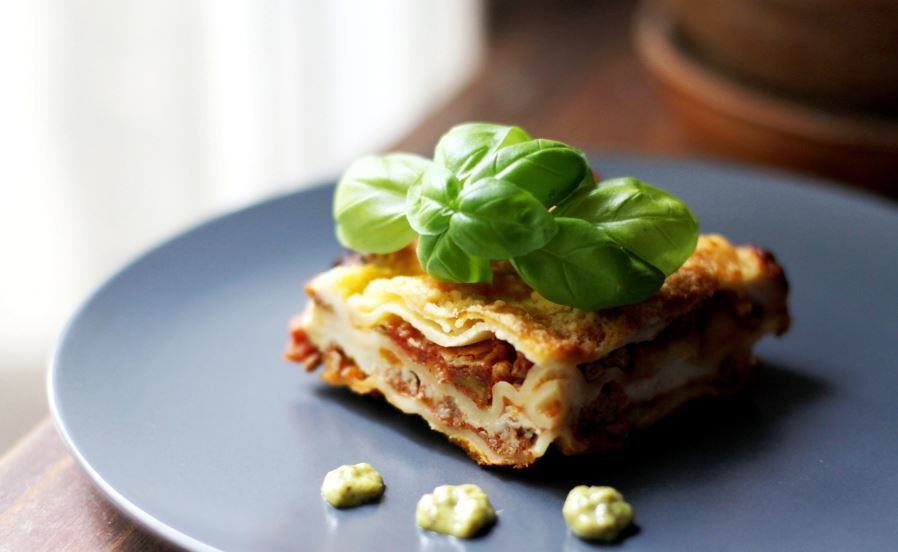

Любимые блюда Лизки
| Название блюда | Оценка | Ссылка на рецепт | Фото блюда |
|---|---|---|---|
| Лазанья | 10/10 | Лазанья классическая с мясом, рецепт |  |
| Паста с лисичками | 10/10 | Паста с лисичками, рецепт |

|
| Том Ям | 10/10 | Том Ям, рецепт |

|
| Салат с уткой и грушей | 10/10 | Салат с уткой и карамельной грушей, рецепт |

|
| Корейка молодого барашка | 10/10 | Корейка молодого барашка, рецепт |

|